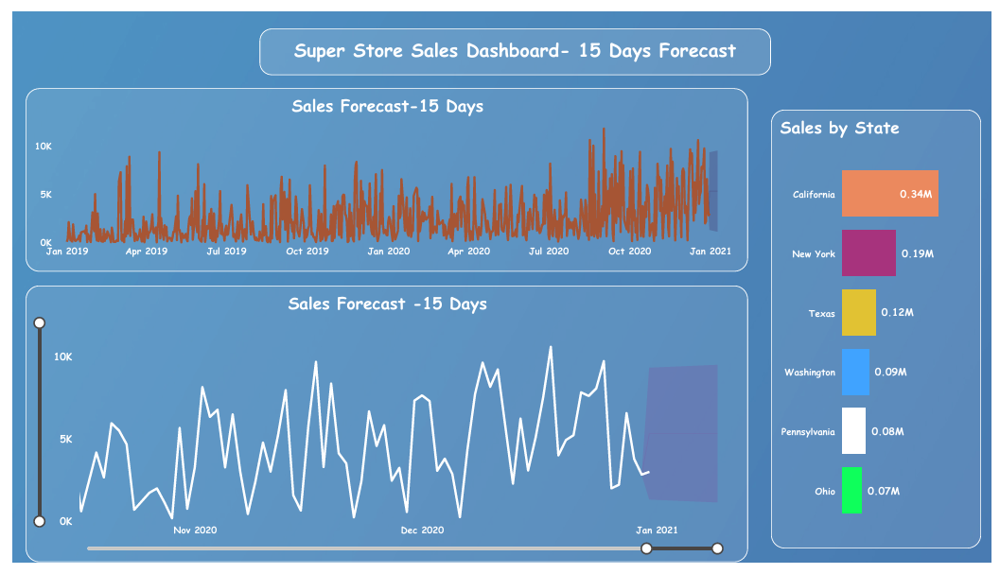
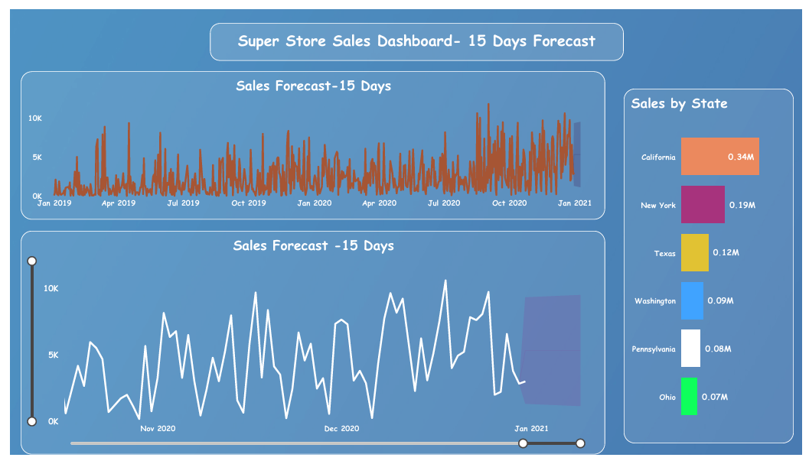

AREESHA NAEEM
Final Year BS Computer Science Student || COMSATS ’26 || Aspiring Data Analyst (Power BI Learner) || Excel || SQL || Python
Final Year BS Computer Science Student || COMSATS ’26 || Aspiring Data Analyst (Power BI Learner) || Excel || SQL || Python
Final Year BS Computer Science student at COMSATS University Islamabad,Attock Campus (Batch 2026) with a strong focus on Data Analytics and Business Intelligence. Hands-on experience in designing interactive, insight-driven dashboards. Skilled in Excel, Power BI, SQL, and Python with a solid technical foundation enabling a strong understanding of data-driven applications and visualization.


 

Internship Training Certificate
Pakistan Aeronautical Complex(PAC) Kamra

Building with Artificial Intelligence
Saylor Academy

Freelancing Coding Competition
COMSATS Freelancing Society

Introduction to Artificial Intelligence
Simplilearn
Email: areesha.naeem122@gmail.com
LinkedIn: linkedin.com/in/areesha-naeem-088507342